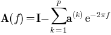
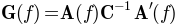
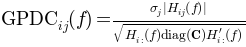
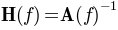
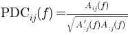
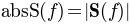
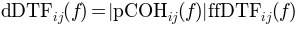
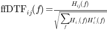
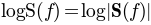

SCoT: The Source Connectivity Toolbox
Global configuration
Connectivity Analysis
Bases: builtins.object
Calculation of connectivity measures
This class calculates various spectral connectivity measures from a vector autoregressive (VAR) model.
| Parameters: | b : ndarray, shape = [n_channels, n_channels*model_order]
c : ndarray, shape = [n_channels, n_channels], optional
nfft : int, optional
|
|---|
Notes
Connectivity measures are returned by member functions that take no arguments and return a matrix of shape [m,m,nfft]. The first dimension is the sink, the second dimension is the source, and the third dimension is the frequency.
A summary of most supported measures can be found in [R1].
References
| [R1] | (1, 2) M. Billinger et al, “Single-trial connectivity estimation for classification of motor imagery data”, J. Neural Eng. 10, 2013. |
Methods
| A() | Spectral representation of the VAR coefficients |
| H() | Transfer function that turns the innovation process into the VAR process |
| S() | Cross spectral density |
| logS() | Logarithm of the cross spectral density (S), for convenience. |
| G() | Inverse cross spectral density |
| logG() | Logarithm of the inverse cross spectral density |
| PHI() | Phase angle |
| COH() | Coherence |
| pCOH() | Partial coherence |
| PDC() | Partial directed coherence |
| ffPDC() | Full frequency partial directed coherence |
| PDCF() | PDC factor |
| GPDC() | Generalized partial directed coherence |
| DTF() | Directed transfer function |
| ffDTF() | Full frequency directed transfer function |
| dDTF() | Direct directed transfer function |
| GDTF() | Generalized directed transfer function |
Spectral VAR coefficients
Coherence
Inverse of the noise covariance
Directed transfer function
Inverse cross spectral density
Generalized directed transfer function
Generalized partial directed coherence
VAR transfer function
Partial directed coherence
Partial directed coherence factor
Cross spectral density
Absolute cross spectral density
” Direct” directed transfer function
Full frequency directed transfer function
Full frequency partial directed coherence
Logarithmic inverse cross spectral density
Logarithmic cross spectral density
Partial coherence

calculate connectivity measures.
| Parameters: | measure_names : {str, list of str}
b : ndarray, shape = [n_channels, n_channels*model_order]
c : ndarray, shape = [n_channels, n_channels], optional
nfft : int, optional
|
|---|---|
| Returns: | result : ndarray, shape = [n_channels, n_channels, nfft]
|
Notes
When using this function it is more efficient to get several measures at once than calling the function multiple times.
Examples
>>> c = connectivity(['DTF', 'PDC'], [[0.3, 0.6], [0.0, 0.9]])
Routines for statistical evaluation of connectivity.
Calculates Bootstrap estimates of connectivity.
To obtain a bootstrap estimate trials are sampled randomly with replacement from the data set.
Note
Parameter var will be modified by the function. Treat as undefined after the function returned.
| Parameters: | measure_names : {str, list of str}
data : ndarray, shape = [n_samples, n_channels, (n_trials)]
var : VARBase-like object
repeats : int, optional
num_samples : int, optional
|
|---|---|
| Returns: | measure : array, shape = [repeats, n_channels, n_channels, nfft]
|
Calculates Jackknife estimates of connectivity.
For each Jackknife estimate a block of trials is left out. This is repeated until each trial was left out exactly once. The number of estimates depends on the number of trials and the value of leaveout. It is calculated by repeats = n_trials // leaveout.
Note
Parameter var will be modified by the function. Treat as undefined after the function returned.
| Parameters: | measure_names : {str, list of str}
data : ndarray, shape = [n_samples, n_channels, (n_trials)]
var : VARBase-like object
nfft : int, optional
leaveout : int, optional
|
|---|---|
| Returns: | result : array, shape = [repeats, n_channels, n_channels, nfft]
|
Calculate significance by controlling for the false discovery rate.
This function determines which of the p-values in p can be considered significant. Correction for multiple comparisons is performed by controlling the false discovery rate (FDR). The FDR is the maximum fraction of p-values that are wrongly considered significant [R2].
| Parameters: | p : ndarray, shape = [n_channels, n_channels, nfft]
alpha : float
|
|---|---|
| Returns: | s : ndarray, dtype=bool, shape = [n_channels, n_channels, nfft]
|
References
| [R2] | (1, 2) Y. Benjamini, Y. Hochberg, “Controlling the false discovery rate: a practical and powerful approach to multiple testing”, Journal of the Royal Statistical Society, Series B 57(1), pp 289-300, 1995 |
Calculates surrogate connectivity for a multivariate time series by phase randomization [R3].
Note
Parameter var will be modified by the function. Treat as undefined after the function returned.
| Parameters: | measure_names : {str, list of str}
data : ndarray, shape = [n_samples, n_channels, (n_trials)]
var : VARBase-like object
nfft : int, optional
repeats : int, optional
|
||
|---|---|---|---|
| Returns: | result : array, shape = [repeats, n_channels, n_channels, nfft]
|
Test mean difference between two bootstrap estimates.
This function calculates the probability p of observing a more extreme mean difference between a and b under the null hypothesis that a and b come from the same distribution.
If p is smaller than e.g. 0.05 we can reject the null hypothesis at an alpha-level of 0.05 and conclude that a and b are likely to come from different distributions.
Note
p-values are calculated along the first dimension. Thus, n_channels * n_channels * nfft individual p-values are obtained. To determine if a difference is significant it is important to correct for multiple testing.
| Parameters: | a, b : ndarray, shape = [repeats, n_channels, n_channels, nfft]
|
|---|---|
| Returns: | p : ndarray, shape = [n_channels, n_channels, nfft]
|
See also
Notes
The function estimates the distribution of b[j] - a[i] by calculating the difference for each combination of i and j. The total number of difference samples available is therefore a.shape[0] * b.shape[0]. The p-value is calculated as the smallest percentile of that distribution that does not contain 0.
Test for difference between two statistics with Mann-Whitney-U test. Samples along first dimension. p-values returned.
Tools for basic data manipulation.
Concatenate trials along time axis.
| Parameters: | x : array_like
|
|---|---|
| Returns: | out : ndarray
|
See also
Examples
>>> x = np.random.randn(150, 4, 6)
>>> y = cat_trials(x)
>>> y.shape
(900, 4)
Cut continuous signal into segments.
This function cuts segments from a continuous signal. Segments are stop - start samples long.
| Parameters: | rawdata : array_like
tr : list of int
start : int
stop : int
|
|---|---|
| Returns: | x : ndarray
|
See also
Examples
>>> data = np.random.randn(1000, 5)
>>> tr = [250, 500, 750]
>>> x = cut_segments(data, tr, 50, 100)
>>> x.shape
(50, 5, 3)
Trial-wise dot product.
This function calculates the dot product of x[:,:,i] with a for each i.
| Parameters: | x : array_like
a : array_like
|
|---|---|
| Returns: | out : ndarray
|
Examples
>>> x = np.random.randn(150, 40, 6)
>>> a = np.ones((40, 7))
>>> y = dot_special(x, a)
>>> y.shape
(150, 7, 6)
Phase randomization.
This function randomizes the input array’s spectral phase along the first dimension.
| Parameters: | data : array_like
|
|---|---|
| Returns: | out : ndarray
|
Notes
The algorithm randomizes the phase component of the input’s complex fourier transform.
Examples
from pylab import *
from scot.datatools import randomize_phase
np.random.seed(1234)
s = np.sin(np.linspace(0,10*np.pi,1000)).T
x = np.vstack([s, np.sign(s)]).T
y = randomize_phase(x)
subplot(2,1,1)
title('Phase randomization of sine wave and rectangular function')
plot(x), axis([0,1000,-3,3])
subplot(2,1,2)
plot(y), axis([0,1000,-3,3])
plt.show()
(Source code, png, hires.png, pdf)
Routines for loading and saving Matlab’s .mat files.
This function should be called instead of direct spio.loadmat as it cures the problem of not properly recovering python dictionaries from mat files. It calls the function check keys to cure all entries which are still mat-objects
Object oriented API to SCoT.
The object oriented API provides a the Workspace class, which provides high-level functionality and serves as an example usage of the low-level API.
Bases: builtins.object
SCoT Workspace
This class provides high-level functionality for source identification, connectivity estimation, and visualization.
| Parameters: | var : {VARBase-like object, dict}
locations : array_like, optional
reducedim : {int, float, ‘no_pca’}, optional
nfft : int, optional
backend : dict-like, optional
|
|---|
Attributes
| unmixing_ | (array) Estimated unmixing matrix. |
| mixing_ | (array) Estimated mixing matrix. |
| plot_diagonal | (str) Configures what is plotted in the diagonal subplots. ‘topo’ (default) plots topoplots on the diagonal, ‘S’ plots the spectral density of each component, and ‘fill’ plots connectivity on the diagonal. |
| plot_outside_topo | (bool) Whether to place topoplots in the left column and top row. |
| plot_f_range | ((int, int)) Lower and upper frequency limits for plotting. Defaults to [0, fs/2]. |
Test for significant difference in connectivity of two sets of class labels.
Connectivity estimates are obtained by bootstrapping. Correction for multiple testing is performed by controlling the false discovery rate (FDR).
| Parameters: | labels1, labels2 : list of class labels
measure_name : str
alpha : float, optional
repeats : int, optional
num_samples : int, optional
plot : {False, None, Figure object}, optional
|
|---|---|
| Returns: | p : array, shape = [n_channels, n_channels, nfft]
s : array, dtype=bool, shape = [n_channels, n_channels, nfft]
fig : Figure object, optional
|
Perform ICA
Perform plain ICA source decomposition.
| Returns: | result : class
|
|---|---|
| Raises: | RuntimeError
|
Perform MVARICA
Perform MVARICA source decomposition and VAR model fitting.
| Parameters: | varfit : string
|
|---|---|
| Returns: | result : class
|
| Raises: | RuntimeError
|
See also
Fit a var model to the source activations.
| Raises: | RuntimeError
|
|---|
Calculate bootstrap estimates of spectral connectivity measures.
Bootstrapping is performed on trial level.
| Parameters: | measure_names : {str, list of str}
repeats : int, optional
num_samples : int, optional
|
|---|---|
| Returns: | measure : array, shape = [repeats, n_channels, n_channels, nfft]
|
See also
Calculate spectral connectivity measure.
| Parameters: | measure_name : str
plot : {False, None, Figure object}, optional
|
|---|---|
| Returns: | measure : array, shape = [n_channels, n_channels, nfft]
fig : Figure object
|
| Raises: | RuntimeError
|
Calculate spectral connectivity measure under the assumption of no actual connectivity.
Repeatedly samples connectivity from phase-randomized data. This provides estimates of the connectivity distribution if there was no causal structure in the data.
| Parameters: | measure_name : str
repeats : int, optional
|
|---|---|
| Returns: | measure : array, shape = [repeats, n_channels, n_channels, nfft]
|
| Raises: | RuntimeError
|
See also
Calculate estimate of time-varying connectivity.
Connectivity is estimated in a sliding window approach on the current data set. The window is stepped n_steps = (n_samples - winlen) // winstep times.
| Parameters: | measure_name : str
winlen : int
winstep : int
plot : {False, None, Figure object}, optional
|
|---|---|
| Returns: | result : array, shape = [n_channels, n_channels, nfft, n_steps]
fig : Figure object, optional
|
| Raises: | RuntimeError
|
Optimize the var model’s hyperparameters (such as regularization).
| Raises: | RuntimeError
|
|---|
Plot spectral connectivity measure under the assumption of no actual connectivity.
Repeatedly samples connectivity from phase-randomized data. This provides estimates of the connectivity distribution if there was no causal structure in the data.
| Parameters: | measure_name : str
repeats : int, optional
fig : {None, Figure object}, optional
|
|---|---|
| Returns: | fig : Figure object
|
Plot scalp projections of the sources.
This function only plots the topos. Use in combination with connectivity plotting.
| Parameters: | fig : {None, Figure object}, optional
|
|---|---|
| Returns: | fig : Figure object
|
Plot topography of the Source decomposition.
| Parameters: | common_scale : float, optional
|
|---|
Remove sources from the decomposition.
This function removes sources from the decomposition. Doing so invalidates currently fitted VAR models and connectivity estimates.
| Parameters: | sources : {slice, int, array of ints}
|
|---|---|
| Raises: | RuntimeError
|
Assign data to the workspace.
This function assigns a new data set to the workspace. Doing so invalidates currently fitted VAR models, connectivity estimates, and activations.
| Parameters: | data : array-like, shape = [n_samples, n_channels, n_trials] or [n_samples, n_channels]
cl : list of valid dict keys
time_offset : float, optional
|
|---|
Specify which trials to use in subsequent analysis steps.
This function masks trials based on their class labels.
| Parameters: | labels : list of class labels
|
|---|
Show current plots.
This is only a convenience wrapper around matplotlib.pyplot.show_plots().
Source decomposition with ICA.
Bases: builtins.object
Result of plainica()
Attributes
| mixing | (array) estimate of the mixing matrix |
| unmixing | (array) estimate of the unmixing matrix |
Source decomposition with ICA.
Apply ICA to the data x, with optional PCA dimensionality reduction.
| Parameters: | x : array-like, shape = [n_samples, n_channels, n_trials] or [n_samples, n_channels]
reducedim : {int, float, ‘no_pca’}, optional
backend : dict-like, optional
|
|---|---|
| Returns: | result : ResultICA
|
Graphical output with matplotlib
This module attempts to import matplotlib for plotting functionality. If matplotlib is not available no error is raised, but plotting functions will not be available.
Circluar connectivity plot
Topos are arranged in a circle, with arrows indicating connectivity
| Parameters: | widths : {float or array, shape = [n_channels, n_channels]}
colors : array, shape = [n_channels, n_channels, 3] or [3]
curviness : float, optional
mask : array, dtype = bool, shape = [n_channels, n_channels]
topo : Topoplot
topomaps : array, shape = [w_pixels, h_pixels]
axes : axis, optional
order : list of int
|
|---|---|
| Returns: | fig : Figure object
|
Plot significance.
Significance is drawn as a background image where dark vertical stripes indicate freuquencies where a evaluates to True.
| Parameters: | a : array, dtype=bool, shape = [n_channels, n_channels, n_fft]
fs : float
freq_range : (float, float)
diagonal : {-1, 0, 1}
border : bool
fig : Figure object, optional
|
|---|---|
| Returns: | fig : Figure object
|
Draw connectivity plots.
| Parameters: | a : array, shape = [n_channels, n_channels, n_fft] or [1 or 3, n_channels, n_channels, n_fft]
fs : float
freq_range : (float, float)
diagonal : {-1, 0, 1}
border : bool
fig : Figure object, optional
|
|---|---|
| Returns: | fig : Figure object
|
Draw time/frequency connectivity plots.
| Parameters: | a : array, shape = [n_channels, n_channels, n_fft, n_timesteps]
fs : float
crange : [int, int], optional
freq_range : (float, float)
time_range : (float, float)
diagonal : {-1, 0, 1}
border : bool
fig : Figure object, optional
|
|---|---|
| Returns: | fig : Figure object
|
Place topo plots in a figure suitable for connectivity visualization.
Note
Parameter topo is modified by the function by calling set_map().
| Parameters: | layout : str
topo : Topoplot
topomaps : array, shape = [w_pixels, h_pixels]
fig : Figure object, optional
|
|---|---|
| Returns: | fig : Figure object
|
Plot all scalp projections of mixing- and unmixing-maps.
Note
Parameter topo is modified by the function by calling set_map().
| Parameters: | topo : Topoplot
mixmaps : array, shape = [w_pixels, h_pixels]
unmixmaps : array, shape = [w_pixels, h_pixels]
global_scale : float, optional
fig : Figure object, optional
|
|---|---|
| Returns: | fig : Figure object
|
Draw a topoplot in given axis.
Note
Parameter topo is modified by the function by calling set_map().
| Parameters: | axis : axis
topo : Topoplot
topomap : array, shape = [w_pixels, h_pixels]
crange : [int, int], optional
offset : [float, float], optional
|
|---|---|
| Returns: | h : image
|
Draw distribution of the Portmanteu whiteness test.
| Parameters: | var : VARBase-like object
h : int
repeats : int, optional
axis : axis, optional
|
|---|---|
| Returns: | pr : float
|
Prepare multiple topo maps for cached plotting.
Note
Parameter topo is modified by the function by calling set_values().
| Parameters: | topo : Topoplot
values : array, shape = [n_topos, n_channels]
|
|---|---|
| Returns: | topomaps : list of array
|
Utility functions
Bases: builtins.object
The most base type
Bases: builtins.type
Inherit doc strings from base class.
Based on unutbu’s DocStringInheritor [R4] which is a variation of Paul McGuire’s DocStringInheritor [R5]
References
| [R4] | (1, 2) http://stackoverflow.com/a/8101118 |
| [R5] | (1, 2) http://groups.google.com/group/comp.lang.python/msg/26f7b4fcb4d66c95 |
Autocovariance matrix at lag l
This function calculates the autocovariance matrix of x at lag l.
| Parameters: | x : ndarray, shape = [n_samples, n_channels, (n_trials)]
l : int
|
|---|---|
| Returns: | c : ndarray, shape = [nchannels, n_channels]
|
Cuthill-McKee algorithm
Permute a symmetric binary matrix into a band matrix form with a small bandwidth.
| Parameters: | matrix : ndarray, dtype=bool, shape = [n, n]
|
|---|---|
| Returns: | order : list of int
|
Examples
>>> A = np.array([[0,0,1,1], [0,0,0,0], [1,0,1,0], [1,0,0,0]])
>>> p = cuthill_mckee(A)
>>> A
array([[0, 0, 1, 1],
[0, 0, 0, 0],
[1, 0, 1, 0],
[1, 0, 0, 0]])
>>> A[p,:][:,p]
array([[0, 0, 0, 0],
[0, 0, 1, 0],
[0, 1, 0, 1],
[0, 0, 1, 1]])
Bases: builtins.object
cache the return value of a method
This class is meant to be used as a decorator of methods. The return value from a given method invocation will be cached on the instance whose method was invoked. All arguments passed to a method decorated with memoize must be hashable.
If a memoized method is invoked directly on its class the result will not be cached. Instead the method will be invoked like a static method:
Examples
>>> class Obj(object):
@memoize
def add_to(self, arg):
return self + arg
>>> Obj.add_to(1) # not enough arguments
>>> Obj.add_to(1, 2) # returns 3, result is not cached
vector autoregressive (VAR) model
Bases: builtins.object
Single-trial cross-validation schema
Use one trial for testing, all others for training.
| Parameters: | t : int
num_trials : int
|
|---|---|
| Returns: | trainset : list of int
testset : list of int
|
Bases: scot.utils.DocStringInheritor
Represents a vector autoregressive (VAR) model.
Warning
VARBase is an abstract class that defines the interface for VAR model implementations. Several methods must be implemented by derived classes.
| Parameters: | model_order : int
|
|---|
Notes
Note on the arrangement of model coefficients: b is of shape [m, m*p], with sub matrices arranged as follows:
| b_00 | b_01 | ... | b_0m |
| b_10 | b_11 | ... | b_1m |
| ... | ... | ... | ... |
| b_m0 | b_m1 | ... | b_mm |
Each sub matrix b_ij is a column vector of length p that contains the filter coefficients from channel j (source) to channel i (sink).
Create a copy of the VAR model.
Fit VAR model to data.
Warning
This function must be implemented by derived classes.
| Parameters: | data : array-like, shape = [n_samples, n_channels, n_trials] or [n_samples, n_channels]
|
|---|---|
| Returns: | self : VAR
|
Test if the VAR model is stable.
This function tests stability of the VAR model as described in [R6].
| Returns: | out : bool
|
|---|
References
| [R6] | (1, 2)
|
Optimize model fitting hyperparameters (such as regularization penalty)
Warning
This function must be implemented by derived classes.
| Parameters: | data : array-like, shape = [n_samples, n_channels, n_trials] or [n_samples, n_channels]
|
|---|
Predict samples on actual data.
The result of this function is used for calculating the residuals.
| Parameters: | data : array-like, shape = [n_samples, n_channels, n_trials] or [n_samples, n_channels]
|
|---|---|
| Returns: | predicted : shape = data.shape
|
Notes
Residuals are obtained by r = x - var.predict(x)
Simulate vector autoregressive (VAR) model
This function generates data from the VAR model.
| Parameters: | l : {int, [int, int]}
noisefunc : func, optional
|
|---|---|
| Returns: | data : array, shape = [n_samples, n_channels, n_trials] |
Test if the VAR model residuals are white (uncorrelated up to a lag of h).
This function calculates the Li-McLeod as Portmanteau test statistic Q to test against the null hypothesis H0: “the residuals are white” [R7]. Surrogate data for H0 is created by sampling from random permutations of the residuals.
Usually the returned p-value is compared against a pre-defined type 1 error level of alpha=0.05 or alpha=0.01. If p<=alpha, the hypothesis of white residuals is rejected, which indicates that the VAR model does not properly describe the data.
| Parameters: | h : int
repeats : int, optional
get_q : bool, optional
|
|---|---|
| Returns: | pr : float
q0 : list of float, optional (get_q)
q : float, optional (get_q)
|
Notes
According to [R8] h must satisfy h = O(n^0.5), where n is the length (time samples) of the residuals.
References
| [R7] | (1, 2)
|
| [R8] | (1, 2) J.R.M. Hosking, “The Multivariate Portmanteau Statistic”, 1980, J. Am. Statist. Assoc. |
Test if signals are white (serially uncorrelated up to a lag of h).
This function calculates the Li-McLeod as Portmanteau test statistic Q to test against the null hypothesis H0: “the residuals are white” [R9]. Surrogate data for H0 is created by sampling from random permutations of the residuals.
Usually the returned p-value is compared against a pre-defined type 1 error level of alpha=0.05 or alpha=0.01. If p<=alpha, the hypothesis of white residuals is rejected, which indicates that the VAR model does not properly describe the data.
| Parameters: | signals : array-like, shape = [n_samples, n_channels, n_trials] or [n_samples, n_channels]
h : int
p : int, optional
repeats : int, optional
get_q : bool, optional
|
|---|---|
| Returns: | pr : float
q0 : list of float, optional (get_q)
q : float, optional (get_q)
|
Notes
According to [R10] h must satisfy h = O(n^0.5), where n is the length (time samples) of the residuals.
References
| [R9] | (1, 2)
|
| [R10] | (1, 2) J.R.M. Hosking, “The Multivariate Portmanteau Statistic”, 1980, J. Am. Statist. Assoc. |
Performs joint VAR model fitting and ICA source separation.
This function implements the MVARICA procedure [R11].
| Parameters: | x : array-like, shape = [n_samples, n_channels, n_trials] or [n_samples, n_channels]
cl : list of valid dict keys
reducedim : {int, float, ‘no_pca’}, optional
optimize_var : bool, optional
backend : dict-like, optional
varfit : string
|
||||||||||||||
|---|---|---|---|---|---|---|---|---|---|---|---|---|---|---|---|
| Returns: | result : class
|
Notes
MVARICA is performed with the following steps: 1. Optional dimensionality reduction with PCA 2. Fitting a VAR model tho the data 3. Decomposing the VAR model residuals with ICA 4. Correcting the VAR coefficients
References
| [R11] | (1, 2)
|
Cross-validation schemas
Single-trial cross-validation schema
Use one trial for testing, all others for training.
| Parameters: | t : int
num_trials : int
|
|---|---|
| Returns: | trainset : list of int
testset : list of int
|
Single-trial cross-validation schema
Use one trial for training, all others for testing.
| Parameters: | t : int
num_trials : int
|
|---|---|
| Returns: | trainset : list of int
testset : list of int
|
{kind=link}
{kind=link}